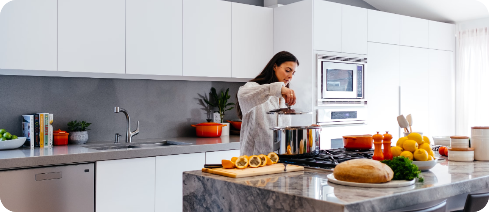
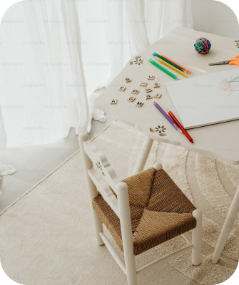
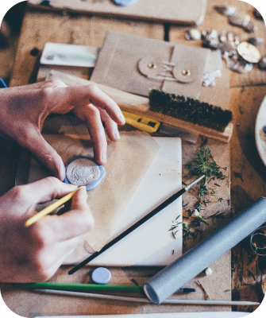

Где использовать
гибкое стекло

На кухне
Скатерти нужно стирать, а гибкое стекло можно протереть губкой
с моющим средством.
Кстати, на столешницу оно не попадёт, так
что не переживайте.
с моющим средством.
Кстати, на столешницу оно не попадёт, так
что не переживайте.

В детской
Лепить пластилин на стол или рисовать на нём фломастерами — нельзя,но очень хочется. С гибким
стеклом ребята могут не ограничивать себя в творчестве
и шалостях.
и шалостях.

На мебели
Гибкое стекло защитит чувствительные поверхности столов и полок от деток, котиков, разлива воды и
прочих
радостей жизни.
радостей жизни.